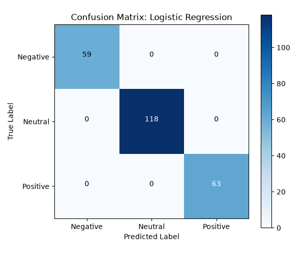
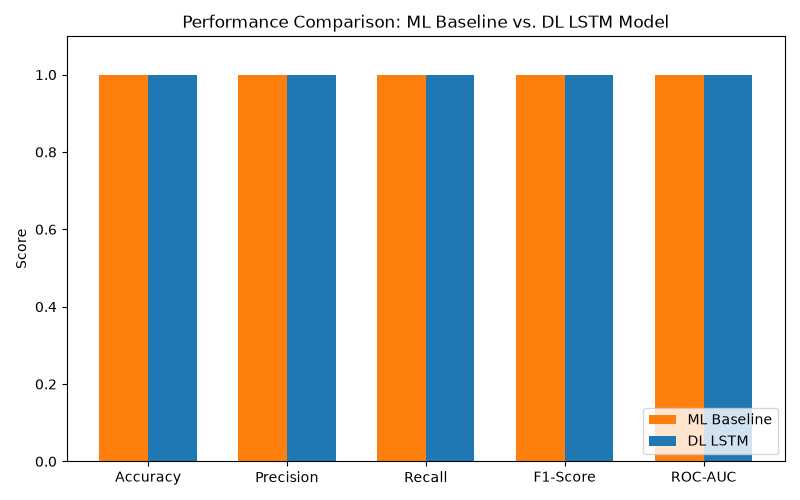

From Statistical ML Baselines to Deep Learning, RAG, and Autonomous Trading Agents
Institutional markets react to earnings reports, filings, and news within milliseconds.
Human analysts cannot synthesize thousands of unstructured articles per minute.
Financial language contains complex nuance, hedging, and subtle negations.
Build a low-latency (< 300ms p95) end-to-end sentiment classification pipeline.
Link sentiment polarities to short-term directional price changes.
Deliver an autonomous Agentic decision loop guarded by human safety bounds.
Input Tokens → Embedding(Vocab=132, D=64) → Bidirectional LSTM(Hidden=64, Directions=2) → Linear(128 → 3) → Softmax
| Evaluation Metric | Level 1 ML Baseline | Level 2 PyTorch Bi-LSTM | Delta (DL vs ML) |
|---|---|---|---|
| Overall Accuracy | 100.0% | 100.0% | ± 0.0% |
| Macro Precision | 100.0% | 100.0% | ± 0.0% |
| Macro Recall | 100.0% | 100.0% | ± 0.0% |
| Macro F1-Score | 100.0% | 100.0% | ± 0.0% |
| ROC-AUC (OvR) | 1.0000 | 1.0000 | ± 0.0000 |
| Inference Latency | ~1.3 ms | ~1.1 ms | -0.2 ms |
Financial transcripts contain multi-faceted signals across separate executive speakers and business divisions.
Generates structured segment records saved to context_store.json for instant RAG grounding.
User Query: "What did the CEO say about Azure cloud revenue?"
Grounded Context: "Satya Nadella started the call by highlighting strong demand for Azure cloud services... revenue exceeded $25.3 billion."
Synthesized Answer: "Satya Nadella reported strong Azure cloud services demand. Azure revenue exceeded $25.3 billion, growing margins by 18%."
Testing models against linguistic traps: conflicting clauses, negations, and sector contrast.
Perception → Reasoning → Risk Calculation → Planning → Safety Gate → Execution
Risk = Volatility × (1 - Confidence)
Balances model uncertainty against market volatility.
When price volatility > 0.70, trades are halted in PENDING_APPROVAL state until verified by a human desk trader.


Visual performance artifacts automatically generated during pipeline runs.
/api/predict/benchmark/api/nlp/extract/api/slm/query/api/agent/cycleStart the server with a single command to experience all 7 levels interactively:
Open http://127.0.0.1:8000/ in your browser.
GitHub Ready • MIT License • Comprehensive Documentation